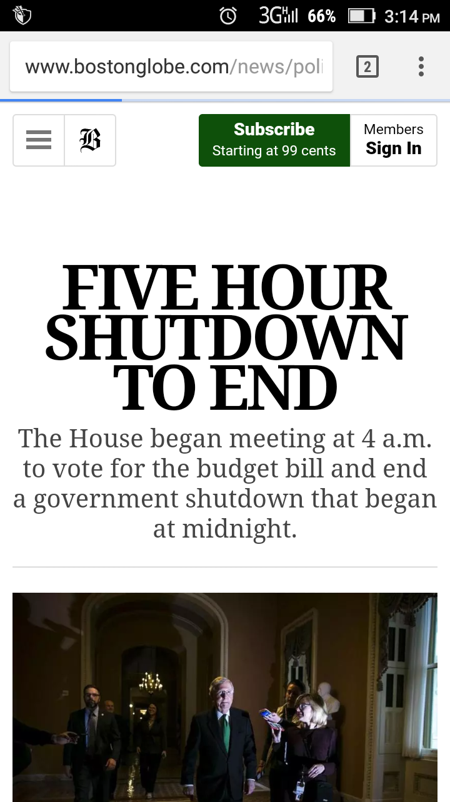
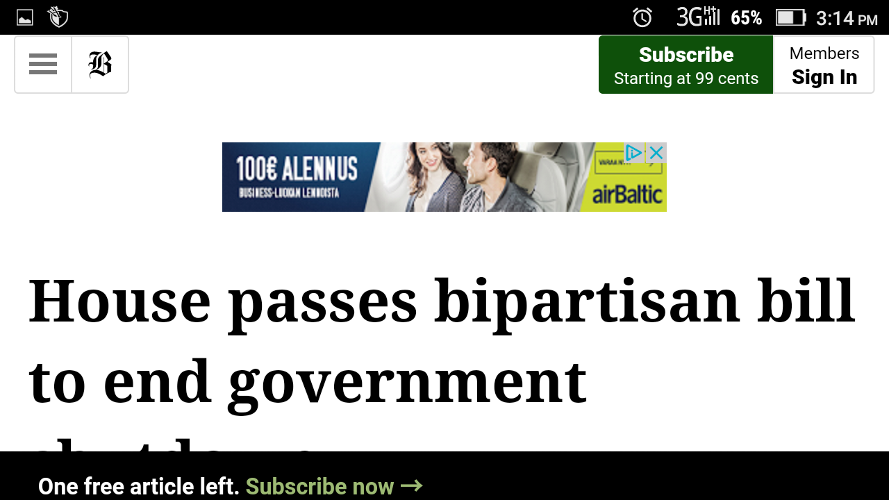

1. Responsive Web Design
Why RWD?
Responsive Web Design is a concept where web pages primarily targeted to computer screens are responsive to be viewed from all media devices with variying screen sizes. Since most of the web traffic now originates from smartphones and other smart devices, it is very important to make websites easily viewable in those small screened devices.
The main purpose of the RWD is to make website's layout adapt to a user's viewing environment via fuid and
proportion-based grids, flexible images and smart CSS and script usage. Its main purpose is to make your
web page look good on all devices(Desktop, mobile, tablet). For example: smartphone users don´t have to zoom in to see the content and don´t have to scroll horizontally. The font size and images used also adapt accordingly making overall experience smooth.
@media queries
"@media" queries in css3 uses the @media rule to include CSS property. It checks he device properties and help apply different styles making the webapage responsive.
Why use em
The "em" is a scalable unit used in web document media. em in styling depends on the font and specifies the font size. Sizes like margins and paddings expressed in em means they will be displayed in proportion in all device sizes.
2. RWD examples
Image from 5.5" 1080p Android Smartphone Portrait screen
Image from 5.5" 1080p Android Smartphone Landscape screen
Image from 14" 720p Laptop

3. RWD in practice
This link takes you to the responsive page where CSS is reset.
4 Responsive left side menu here
4.c < figure > element
When figure element is used, it is no more a separate element of the page which means even if the element is no more present there, it does not affect the actual content of the document.